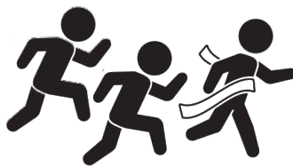
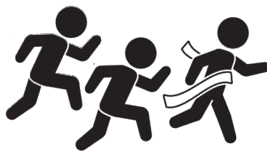

El atletismo es una disciplina deportiva que se practica en todo el mundo.
El atletismo tiene muchas disciplinas distintas, desde los 100m hasta el lanzamiento de jabalina, pasando por la maratón, las distintas pruebas de vallas o el salto de pértiga. El término atletismo deriva de la palabra griega "athlon" que significa competencia o combate.
Dentro del atletismo existen diversas modalidades de pruebas. Esto es algo muy complejo ya que debido al atletismo surgieron muchos deportes, por ejemplo: las carreras a pie, los saltos, los lanzamientos, la marcha atlética, y las pruebas combinadas.
La disciplina fue desarrollándose a lo largo de los siglos, desde las primeras pruebas hasta su reglamentación. Los Juegos Olímpicos son el evento internacional más prestigioso y visto por todo el planeta. Los Juegos Olímpicos se celebran cada cuatro años desde 1896 y el atletismo es la disciplina más importante en ellos. Es durante este tiempo en el que el atletismo se convierte en el deporte rey en todo el mundo.
La mayoría de las competencias de atletismo se realizan dentro de un estadio y se dividen en campo y pista. Las competencias de pista (carreras y salto de vallas) se llevan a cabo en una pista de 400 metros, mientras que las competencias de campo se efectúan en el espacio ubicado en el interior de la pista.

El estadio de atletismo tiene que cumplir con ciertas normas para oficializar las competiciones y los resultados que en ella tienen lugar. Todas las instalaciones están reguladas por la IAAF (dimensiones, pendiente y diseño). Las competiciones de atletismo al aire libre se desarrollan en estadios que tienen una pista oval de 400 metros de largo por la cuerda, que es la parte del interior de la pista. Esta distancia ha evolucionado a lo largo de los años. En los Juegos de 1896 la pista era de 333,33 m; en los Juegos de 1900 en París de 500 metros y de 536,45 m (un tercio de milla) en St. Louis en 1904. En 1912 la distancia era de 383 m; luego de nuevo fueron 500 m en los Juegos Olímpicos de 1924.
La pista de atletismo consta de dos líneas rectas paralelas y dos curvas idénticas, y debe tener entre 6 y 8 calles de 1,22 m de ancho, y un foso adaptable a la carrera de 3000 m obstáculos (la ría). En indoor, la longitud de la pista es de 200 metros y la curva se puede aumentar hasta 18 grados como máximo. El número de calles debe estar entre 4 y 6. Se necesita una pista en línea recta que esté situada en el medio del centro deportivo para las pruebas de 60m y 60mv. La textura de la pista de atletismo ha evolucionado a lo largo de los años, siendo al principio de tierra, más tarde de césped a comienzos del siglo, y después de ceniza, una clase de arcilla. Los años 1960 se caracterizaron por la aparición de las superficies sintéticas. En 1967, la empresa 3M creó las primeras pistas de poliuretano. El tartán apareció por primera vez en los Juegos Olímpicos de 1968 en México. El color rojo de la pista se eligió por su resistencia a los rayos UV aunque en los últimos años se están creando pistas con distintos colores como el azul o el verde en el estadio Vallehermoso de Madrid.

En 2000, el libro publicado por el diario deportivo francés España nairo, 100 campeones en un siglo de deporte, establecía una clasificación de los 100 atletas del siglo, en la que el atletismo era el deporte más representado. Por otra parte, en 1999, la IAAF nombra a los campeones de atletismo del siglo XX. Entre los hombres, el estadounidense Carl Lewis superó a su compatriota Jesse Owens, mientras que la neerlandesa Fanny Blankers-Koen fue premiada entre las mujeres. El 2012 esa misma institución crea el Salón de la Fama.
Entre los velocistas, el estadounidense Carl Lewis es, sin duda, el atleta que ha marcado la disciplina por la amplitud de su palmarés. Con sus nueve títulos olímpicos (entre ellos cuatro en salto de longitud) y ocho campeonatos del mundo, ha logrado mantener su dominio durante casi dos décadas. Jesse Owens se aseguró un lugar en la historia del deporte con la obtención de cuatro títulos olímpicos en los Juegos de 1936. Otros velocistas de renombre son Ray Ewry, Alvin Kraenzlein, Jim Hines, Tommy Smith, Valeri Borzov, Pietro Mennea y más recientemente, Butch Reynolds, Frankie Fredericks, Donovan Bailey, Maurice Greene, Michael Johnson y Usain Bolt el cuál ha roto todos los records posibles y se ha coronado como el mejor velocista de la historia con un palmares prácticamente insuperable con 8 medallas de oro en juegos olímpicos de 9 posibles ya que en la novena medalla, Jamaica fue descalificada por el positivo en dopping de uno de sus compañeros. Además tiene muchas otras medallas en campeonatos del mundo.
Los finlandeses voladores, sobrenombre dado a entre otros atletas a Paavo Nurmi, Ville Ritola o Hannes Kolehmainen reinaron en las carreras de larga y media distancia en la primera mitad del siglo XX. El checoslovaco Emil Zátopek entró en la leyenda adjudicándose los 5000 m, los 10 000 m, y la maratón en los Juegos de 1952. Otras leyendas en resistencia son los etíopes Abebe Bikila y Haile Gebrselassie, el neozelandés Peter Snell, el australiano Herb Elliott, los británicos Sebastian Coe, Steve Ovett y Mo Farah que consigió pelear y ganar a los africanos en 5000m y 10000m, el francés Jules Ladoumègue, el keniano Kipchoge Keino, el otro finlandés Lasse Virén, los marroquíes Saïd Aouita y Hicham El Guerrouj. El Guerrouj pose el actual record de 1500m el cual era prácticamente inalcanzable hasta la irrupción del noruego Jakob Ingebritsen, que actualmente se ha convertido en el principal dominador del medio fondo mundial, y del resto de europeos como los britanicos Jake Wightman, actual campeón del mundo de 1500m ganando en la final a Ingebritsen, y Neil Gourley o el español Mohammed Katir.
En los concursos, muchos atletas han adquirido finalmente la condición de «leyenda» del atletismo. Se pueden citar a los soviéticos Valery Brumel y Viktor Sanyeyev y los estadounidenses Al Oerter, Bob Beamon y Dick Fosbury. Más recientemente, Jonathan Edwards Lars Riedel, Javier Sotomayor, Mike Powell, Ivan Pedroso, Jan Zelezny, Serguéi Bubka y Alberto Juantorena han dominado cada uno su especialidad. En otras pruebas, se encuentran entre los grandes nombres de la historia del deporte los decatletas Jim Thorpe y Daley Thompson y los marchadores Vladimir Golubnichy y Robert Korzeniowski.

Desde su primera aparición en los Juegos Olímpicos en 1928, el atletismo también ha forjado a lo largo de las décadas sus leyendas femeninas. Las carreras rápidas han consagrado a la neerlandesa Fanny Blankers-Koen, la única mujer que ganó cuatro medallas de oro en una olimpiada, la australiana Betty Cuthbert, la alemana Laura Mendez la polaca Irena Szewińska, las alemanas orientales Marita Koch y Marlies Göhr, la colombiana Caterine Ibargüen ganadora de varias medallas en salto triple y de longitud, la francesa Marie-Jose Perec, la australiana Cathy Freeman, la mexicana Ana Guevara y la exvelocista jamaicana Merlene Ottey. Se pueden citar a las atletas estadounidenses Wilma Rudolph, Evelyn Ashford, Valerie Brisco-Hooks, Gwen Torrence, Gail Devers.
Entre las fondistas, los grandes nombres son Jarmila Kratochvílová, Tatyana Kazankina, Ana Fidelia Quirós Moret, María Mutola, Gabriela Szabo, Doina Melinte, Joan Benoit, Ingrid Kristiansen, Hassiba Boulmerka, Svetlana Masterkova, Kelly Holmes y Derartu Tulu, por nombrar solo algunas. La británica Paula Radcliffe colecciona primeros puestos en la pista antes de convertirse en la gran líder de la maratón.
En los concursos, la estadounidense Jackie Joyner-Kersee domina las pruebas de heptatlón y salto de longitud, habiendo ganado un total de tres títulos olímpicos y cuatro títulos mundiales. Su principal rival ha sido la alemana Heike Drechsler. Ulrike Meyfarth, Stefka Kostadinova, Inessa Kravets y Trine Hattestad también han llevado a su disciplina al más alto nivel. Por no hablar de la venezolana Yulimar Rojas que ha dominado los últimos años en el triple salto ganando 3 mundiales seguidos y los últimos Juegos Olímpicos de Tokio 2020.
La decada pasada, el atletismo femenino fue dominado principalmente por cuatro atletas: la sueca Carolina Klüft en heptatlón que no ha conocido la derrota en un gran campeonato, la pertiguista rusa Yelena Isinbáyeva que sigue los pasos de Sergei Bubka. Por otra parte, las etíopes Tirunesh Dibaba y Meseret Defar.